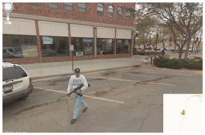

Io dico: gli americani, porcoddio!
Ma come se fa a esse americani? Dici, “basta che nasci nelle americhe”. Si’ ok, ma come cazzo di Cristo si fa?
Per essere americano devi essere dell’idea che la riuscita della tua vita sia un sogno, americano piu’ di te, il quale ti puo’ dare solo i soldi, perche’ solo coi soldi puoi vivere da vero essere umano; cioe’ americano.
Il male e’ sempre fuori “dalla tua proprieta’”. E quando lo vedi ci puoi anche shparare in teshta… lo dice il secondo emendamento!
A me fanno ridere che ti fanno il test psicoattitudinale quando vai a comprare un ak-47 nel negozio vicino a quello di giocattoli dove hai preso la prima bambola a tua figlia. Perche’ se sei pazzo noi non te le diamo le armi…
E sei pieno di medici che mi fanno ridere tantissimo.
Esempio: un ragazzino entra a scuola imbottito di armi semi-automatiche, coi proiettili esplosivi e teflonati e ammazza quaranta persone. Ha fatto tanti videi che ha messo su youtube dove racconta al mondo intero quanto sia cattiva l’umanita’ e bla bla bla bla. Vabbe’ porcoddio taglia corto, ammazza ammazzati e vaffanculo.
E’ pazzo, e’ schizofrenico, e’ psicopatico! Oh, poverino…
Mannaggia la madonna… ecco, io sono blasfemo.
Allora a ‘na certa te c’hai un sacco di quei dottori che rovistano tra i cervelli dei sedicenni carcerati che sovraffollano le galere per scovare il male nella testa. Perche’ e’ logico vendere fucili d’assalto a chiunque sostenga positivamente un test psicoattitudinale, che c’e’ di strano? E’ sano: gli vendo un uzi!
Business ragazzi, marketing!
Haha!
Immagino la scena col tipo dietro al bancone circondato da armi da fuoco che ti rende appetitoso il prodotto: hey boy, con questa farai fuori tutti i tuoi amichetti in pochi secondi!
Cioe’ ma che cazzo gli dici a uno quando viene a comprare un’arma, per convincerlo a comprare questa piuttosto che quella?
Vado al mediaworld perche’ voglio un tv-color del cazzo GIGANTESCO, per vedere i PORNO in ACCADDI’, rovisto tra i phillips e i samsung e mi arriva l’omino blu col mivar di 20 anni fa blaterando che ancora oggi non si vedono pezzi affidabili come questi, talmente affidabili che sono in magazzino da tre anni e non li vuole nessuno. Insomma, per una cazzo di tivvu’ qualcuno ci caschera’ pure… va’ bene.
Ma per le armi?
Hey boy, ti piace quell’EICHEI vero? Yeaaah, sei uno che se ne intende mi sa… vieni qui dietro, ho una cosa speciale che faccio vedere solo a gente speciale… per le STRAGI, questo e’ il ferro migliore che tu possa trovare, e ce l’ho solo io, chiamami SAM!
Dai, sul serio…
Ora dico, fagli pure i test psichiatrici dei miei due grossi coglioni che ti pare. Pero’ tieni presente che gli psicopatici esistono in tutto il mondo, allora perche’ nel resto del pianeta casi come quelli ben noti negli U.S.A sono RARI? *HINT* forse perche’ non vai a comprare un fucile dal tabbaccaro negli altri paesi del cazzo *HINT*.
Insomma, va’ bene la ricerca, va’ bene che la medicina deve progredire e tutto… sarebbe fico se chi soffre di queste temibili patologie mentali potesse in qualche modo guarire e vivere una vita normale grazie ad una pillolina rosa. Nel frattempo pero’, SAM, ti prego di non mettergli un mitra in mano, ti pare?

Ed e’ divertente quando vai a leggere le tue news online perche’ sei nell’era digitale, e trovi un articolo che ti dice che e’ stato isolato il virus dell’obesita’. Ovviamente la notizia e’ gia’ distorta perche’ i giornalisti, poverini… comunque fai le tue ricerche perche’ sei curioso di capire come una CAZZATA del genere possa avere rilevanza nella tua vita e scopri che la ricerca parte dal Pennington Biomedical Research Center . Yeeeeeeeeeeeeeeeeeaaaah! Louisiana baby, tanti fratelli neri e tanto cotone per te!
Cioe’ secondo un Mohinder Suresh del cazzo trapiantato negli U.S.A alcuni virus favoriscono la moltiplicazione delle cellule di grasso e quindi capace pure che se ti siedi accanto a Giuliano Ferrara “ETCIU’!”, e mo so’ cazzi tua! “SNIFFF, SNIFFF…”
“Scusa che c’hai un fazzoletto?”
Porca madonnaccia.
Dio cane.
Ma ammesso che tutto sia in qualche modo vero, secondo te, caro il mio dottore delle americhe, il fatto che il 90% di coloro che possono essere i tuoi pazienti mangi circa quattro volte al giorno in un fast food del cazzo, ingozzandosi di cheesburgher, taco, nuggets e coca-cola non puo’ in qualche modo essere una ragione piu’ ATTENDIBILE della loro OBESITA’ DIMMERDA?
” To date, AD-36 is the only human adenovirus that has been linked with human obesity, present in 30% of obese humans and 11% of nonobese humans.[4] AD-36 also causes obesity in chickens, mice, rats, and monkeys.[4] “, Wikipedia.
” MA ANNATEVENAFFANCULO! “, tripz.
Questo per me significa che il 30% degli OBESE HUMANS che risultano positivi all’ad-36 sono, in ordine: POLLI, TOPI, RATTI E SCIMMIE.
Insomma, qua ce sta’ SAND che e’ raffreddato un giorno si’ e l’artro pure… eppure e’ secco come er cane di un barbone mannaggia cristo!
L’ADENOVIRUS AD-36 ESISTE IN TUTTO IL MONDO, E GLI OBBBBESI PURE, MA TANTI OBBBBESI COME IN AMERICA PORCODDIO NO! NEL RESTO DEL FOTTUTO MONDO, NO! CI SARA’ UNA CAZZO DI RAGIONE DEL CRISTO INCORONATO SULLA CROCE SE LE COSE STANNO COSI’ NO?
LA DOVETE FAR FINITA DI ROVISTARE NEI PUNTI PIU’ BUI E REMOTI DELLA VOSTRA INSULSA ESISTENZA SU QUESTO PIANETA, ALLA RICERCA DELLE CAUSE DEI VOSTRI CAZZO DI PROBLEMI DI MERDA, QUANDO GRAN PARTE DI QUESTI PROBLEMI SONO SICURAMENTE CAUSATI PRINCIPALMENTE DALLE VOSTRE FOTTUTE ABITUDINI QUOTIDIANE HORRENDE! HORRO!
BASTA, BASTA PORCODDIO! SIETE VOI E SOLO VOI IL VOSTRO VERO PROBLEMA, FATELA FINETELA MANNAGGIA A DIO! DIO NON BENEDICE L’AMERICA, DIO SE NE FOTTE PERCHE’ JE RODE ER CULO!